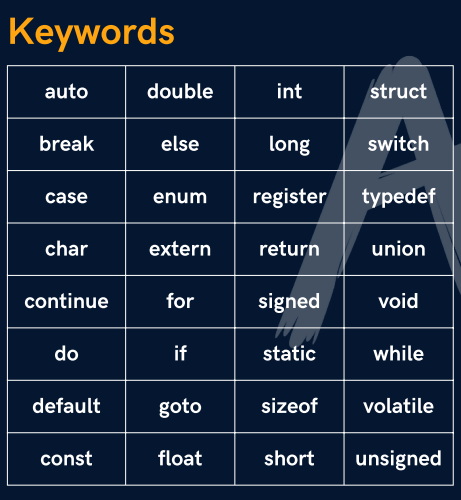

| Basic Knowledge | |
|---|---|
| Topic | Details |
| Compiler? | It contains rules for the language |
| #include <>? | Tells compiler about the use of a header file neccessary for the execution of the code |
| int main |
it is a default function in which the code is to be written
Note : if return is not mention in the main() function then the compiler will automatically add return at the end |
| Use of ; is must at end of each line | |
| printf(); | To print something on the terminal
printf("%d", num); Note: here "%d" is the "format specifier" |
| scanf(); | To take value of variable terminal
scanf("%d", &num); Note: use "&" is must while taking value |
#include <stdio.h>
|
|
| Various Datatype in C | |
|---|---|
| int |
to store an integer
int num = 10; |
| char | to store a single character
char str = 'x' Note: for single character, use single quotes '' |
Rules to naming a variable
|
Storage used by various DataTypes |
| keyword? |
Reserved words in a coding language

|
| comments |
// like this
/* and like this */ |
Various escape sequences |
|
Type Conversion |
|
| Operators | |
|---|---|
| Arithmetic Operators | +, -, /, %, //, *, (**, ^) are not available in C language for power |
| Relational Operators | ==, >, >=, <, <= ,!= |
| Logical Operators | &&(AND), ||(OR), !(NOT) |
| Assignment Operators | +=, -=, *=, /=, %= |
|
// check the precendency order of all these Operators
|
|
|
learn "ternary", "if-else", "switch" from JS Notes (CLICK HERE)
|
|
| LOOPS | |
|---|---|
| Jumping statements |
break - skips all the next iterations of loop and exits the loop
continue - skips the current iteration and not affecting other iterations |
| for loop |
for (int i = 1; i <= num; i++){ if (i != 6){ printf("%d\n",i); } } |
| while loop |
int i = 10; while (i > 0){ printf("%d\n",i); i--; } |
| do while loop |
int num; do{ printf("Enter number : "); scanf("%d",&num); printf("\n"); }while(num % 7 == 0); |
| Function | |
|---|---|
| Theory | there are two type of function:
function takes arguments and values passes at the time of function calling are known as actual parameters |
How is a function declared in C ?see here in the figure that we declared a function prototype then at the bottom we wrote funtion definition and in the main function we did the function calling. |
|